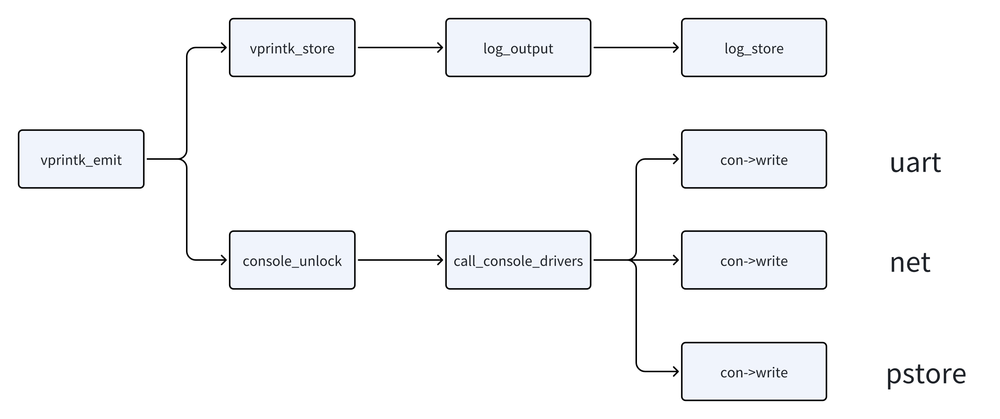

调试技术¶
内核日志系统¶
log_buf¶
log_buf是一个循环缓冲区，用于存储内核日志消息，定义在<kernel/printk/printk.c>中：
#define LOG_ALIGN __alignof__(unsigned long)
#define __LOG_BUF_LEN (1 << CONFIG_LOG_BUF_SHIFT)
#define LOG_BUF_LEN_MAX (u32)(1 << 31)
static char __log_buf[__LOG_BUF_LEN] __aligned(LOG_ALIGN);
static char *log_buf = __log_buf;
static u32 log_buf_len = __LOG_BUF_LEN;
vprintk_emit()函数从log_buf中获取log，然后输出至console，过程如下：

console_unlock()函数遍历每个注册的console，输出log，是在持有spinlock和关中断状态下执行的。因此如果串口一直在打印log，会导致CPU一直处于关中断状态，其他进程无法获得调度机会导致卡死：
void console_unlock(void)
{
static char ext_text[CONSOLE_EXT_LOG_MAX];
static char text[LOG_LINE_MAX + PREFIX_MAX];
unsigned long flags;
bool do_cond_resched, retry;
struct printk_info info;
struct printk_record r;
if (console_suspended) {
up_console_sem();
return;
}
prb_rec_init_rd(&r, &info, text, sizeof(text));
/*
* Console drivers are called with interrupts disabled, so
* @console_may_schedule should be cleared before; however, we may
* end up dumping a lot of lines, for example, if called from
* console registration path, and should invoke cond_resched()
* between lines if allowable. Not doing so can cause a very long
* scheduling stall on a slow console leading to RCU stall and
* softlockup warnings which exacerbate the issue with more
* messages practically incapacitating the system.
*
* console_trylock() is not able to detect the preemptive
* context reliably. Therefore the value must be stored before
* and cleared after the "again" goto label.
*/
do_cond_resched = console_may_schedule;
again:
console_may_schedule = 0;
/*
* We released the console_sem lock, so we need to recheck if
* cpu is online and (if not) is there at least one CON_ANYTIME
* console.
*/
if (!can_use_console()) {
console_locked = 0;
up_console_sem();
return;
}
for (;;) {
size_t ext_len = 0;
size_t len;
printk_safe_enter_irqsave(flags);
raw_spin_lock(&logbuf_lock);
skip:
if (!prb_read_valid(prb, console_seq, &r))
break;
if (console_seq != r.info->seq) {
console_dropped += r.info->seq - console_seq;
console_seq = r.info->seq;
}
if (suppress_message_printing(r.info->level)) {
/*
* Skip record we have buffered and already printed
* directly to the console when we received it, and
* record that has level above the console loglevel.
*/
console_seq++;
goto skip;
}
/* Output to all consoles once old messages replayed. */
if (unlikely(exclusive_console &&
console_seq >= exclusive_console_stop_seq)) {
exclusive_console = NULL;
}
/*
* Handle extended console text first because later
* record_print_text() will modify the record buffer in-place.
*/
if (nr_ext_console_drivers) {
ext_len = info_print_ext_header(ext_text,
sizeof(ext_text),
r.info);
ext_len += msg_print_ext_body(ext_text + ext_len,
sizeof(ext_text) - ext_len,
&r.text_buf[0],
r.info->text_len,
&r.info->dev_info);
}
len = record_print_text(&r,
console_msg_format & MSG_FORMAT_SYSLOG,
printk_time);
console_seq++;
raw_spin_unlock(&logbuf_lock);
/*
* While actively printing out messages, if another printk()
* were to occur on another CPU, it may wait for this one to
* finish. This task can not be preempted if there is a
* waiter waiting to take over.
*/
console_lock_spinning_enable();
stop_critical_timings(); /* don't trace print latency */
call_console_drivers(ext_text, ext_len, text, len);
start_critical_timings();
if (console_lock_spinning_disable_and_check()) {
printk_safe_exit_irqrestore(flags);
return;
}
printk_safe_exit_irqrestore(flags);
if (do_cond_resched)
cond_resched();
}
console_locked = 0;
raw_spin_unlock(&logbuf_lock);
up_console_sem();
/*
* Someone could have filled up the buffer again, so re-check if there's
* something to flush. In case we cannot trylock the console_sem again,
* there's a new owner and the console_unlock() from them will do the
* flush, no worries.
*/
raw_spin_lock(&logbuf_lock);
retry = prb_read_valid(prb, console_seq, NULL);
raw_spin_unlock(&logbuf_lock);
printk_safe_exit_irqrestore(flags);
if (retry && console_trylock())
goto again;
}
EXPORT_SYMBOL(console_unlock);
call_console_drivers()函数负责调用每个console的write接口，将日志写入对应的console：
static void call_console_drivers(const char *ext_text, size_t ext_len,
const char *text, size_t len)
{
static char dropped_text[64];
size_t dropped_len = 0;
struct console *con;
trace_console_rcuidle(text, len);
if (!console_drivers)
return;
if (console_dropped) {
dropped_len = snprintf(dropped_text, sizeof(dropped_text),
"** %lu printk messages dropped **\n",
console_dropped);
console_dropped = 0;
}
for_each_console(con) {
if (exclusive_console && con != exclusive_console)
continue;
if (!(con->flags & CON_ENABLED))
continue;
if (!con->write)
continue;
if (!cpu_online(smp_processor_id()) &&
!(con->flags & CON_ANYTIME))
continue;
if (con->flags & CON_EXTENDED)
con->write(con, ext_text, ext_len);
else {
if (dropped_len)
con->write(con, dropped_text, dropped_len);
con->write(con, text, len);
}
}
}
访问log¶
syslog()系统调用和klogctl()接口klogctl()是syslog()系统调用的封装，可以通过man查看用法
- /dev/kmsg
cat /dev/kmsg：查看原始log数据echo xxx > /dev/kmsg：插入log
- /proc/kmsg
cat /proc/kmsg：只显示新产生的log
- dmesg命令
dmesg -c：记录显示位置，下次不会显示之前的logdmesg -n 8：设置日志等级为8dmesg -r：打印log时附带log level
log_level¶
log_level用来控制哪些log可以在串口控制台被打印：
| 日志等级 | 描述 |
|---|---|
| KERN_EMERG | System is unusable |
| KERN_ALERT | Action must be taken immediately |
| KERN_CRIT | Critial conditions |
| KERN_ERR | Error conditions |
| KERN_WARNING | Warning conditions |
| KERN_NOTICE | Normal but significant condition |
| KERN_INFO | Informational |
| KERN_DEBUG | Debug-level mesasges |
上面四个数字分别对应：
- console_loglevel：控制台输出等级
- default_message_loglevel：默认消息输出等级
- minimum_console_loglevel：最低控制台输出等级
- default_console_loglevel：默认控制台输出等级
打印函数¶
- printk：不建议直接使用
- pr_debug, pr_xxx：内核非设备驱动使用
- dev_dbg, dev_xxx：内核驱动中使用
调试函数¶
- dump_stack()：打印当前调用栈
- BUG()：触发panic，输出 log
- BUG_ON(condition)：如果条件为真，则触发 panic，输出 log
- WARN(condition, fmt...)：如果条件为真，打印信息，不触发 panic
- WARN_ON(condition)：调用
dump_stack() - panic(fmt...)：系统 crash，输出 log
获取函数地址¶
在内核调试中，经常需要知道某个函数的地址，或者根据地址找到相应的函数。下面介绍几种方法，可以获取函数的地址信息。
- system.map：在内核编译时，会生成一个 system.map 文件，也叫内核符号表，里面每一行都代表一个函数符号，包括地址、类型和名称。
- vmlinux：编译内核时生成的原始内核镜像文件，可以通过
nm、objdump和readelf等工具来查看符号表信息。 - /proc/kallsyms：内核符号表信息，可以通过
cat /proc/kallsyms命令查看。
动态打印¶
/sys/kernel/debug/dynamic_debug/control 是 Linux 系统中的一个特殊文件，用于动态调试内核代码。开发者可以在运行时动态地启用或禁用内核中的调试信息，而不需要重新编译内核。所有通过pr_debug()和dev_debug()打印的信息都可以动态的显示或不显示。
/sys/kernel/debug/dynamic_debug/control 文件接受以下格式的命令：
module <module_name> <flags>
file <file_name> <flags>
func <function_name> <flags>
line <line_number> <flags>
format <format_string> <flags>
例如，下面这条命令会启用my_driver.c文件中所有使用pr_debug()和dev_dbg()宏输出的调试信息。命令中的+p参数表示启用打印。
常用调试功能¶
KASAN¶
strace¶
strace用于跟踪程序的系统调用情况，它的基本用法是：strace [options] command [command-args]。
启动选项：
-E：设置环境变量-p：跟踪指定进程-u：以指定用户启动
过滤：
-e：指定过滤条件，参数trace设置指定追踪事件，signal设置指定信号，status设置指定返回状态
输出格式：
-c：统计每个系统调用的时间、次数和错误-o filename：将输出写入指定文件-t：在每行系统调用输出前显示时间戳-tt：显示微妙级的时间戳-T：显示每个系统调用的执行时间-v：详细输出，包括所有结构和符号常量-x：以十六进制格式显示非ASCII字符串-y：显示每个文件描述符对应的文件路径